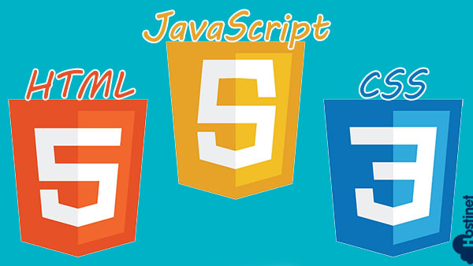

La programación front-end se refiere a la parte de desarrollo de software que se ocupa de
crear la interfaz de usuario de una aplicación o sitio web. Es decir, se trata de todo lo
que un usuario ve y con lo que interactúa en su navegador web. En este sentido, el front-end
se encarga de la estructura, el diseño y la interactividad de una página web.
Lenguajes y Tecnologías. front-end implica varias etapas y tecnologías, que incluyen:
HTML (HyperText Markup Language): Es el lenguaje de marcado principal utilizado para
crear la estructura y el contenido de una página web. Permite definir elementos como
encabezados, párrafos, listas, enlaces, imágenes y más.
CSS (Cascading Style Sheets): Es un lenguaje utilizado para definir la presentación y
el estilo visual de una página web. Con CSS , puedes establecer el diseño, los colores,
las fuentes, los tamaños y otros aspectos visuales de los elementos HTML .
JavaScript Es un lenguaje de programación que permite agregar interactividad y
comportamiento dinámico a una página web. Con JavaScript, puedes manipular elementos
HTML , responder a eventos del usuario, enviar y recibir datos del servidor y realizar
operaciones más complejas en el navegador.
Frameworks y bibliotecas: Existen varios frameworks y bibliotecas populares que
simplifican el desarrollo front-end y proporcionan herramientas adicionales. Algunos
ejemplos comunes son React, Angular y Vue.js, que permiten crear aplicaciones web de
una sola página (Single Page Applications) y facilitan la gestión del estado de la
aplicación, la manipulación del DOM y la construcción de interfaces de usuario
reactivas.
Diseño responsivo: En la actualidad, es esencial que las aplicaciones y los sitios web
sean accesibles desde una amplia gama de dispositivos, como computadoras de escritorio,
tablets y teléfonos móviles. Para lograrlo, se utiliza el diseño responsivo, que
consiste en adaptar la apariencia y el diseño de la interfaz de usuario según las
características del dispositivo utilizado.
Pruebas y depuración: Es fundamental realizar pruebas exhaustivas en el front-end para
garantizar que la aplicación funcione correctamente y que la experiencia del usuario sea
fluida. Para ello, se utilizan diversas técnicas y herramientas de depuración, como
consolas de desarrolladores integradas en los navegadores, pruebas unitarias y de
integración, y herramientas de automatización.
Además de estas tecnologías y etapas, el desarrollo front-end también implica una comprensión
sólida de los principios de diseño web, la usabilidad, la accesibilidad y la optimización del
rendimiento. Es importante tener en cuenta que el desarrollo front-end está en constante
evolución, con nuevas tecnologías, estándares y prácticas emergentes que surgen regularmente.
Conceptos fundamentales.
Interfaz de Usuario (UI): El desarrollo front-end se centra en crear la interfaz de
usuario con la que los usuarios interactúan. Esto incluye elementos como botones,
formularios, menús y diseño visual.
HTML (Lenguaje de Marcado de Hipertexto):
HTML es la base del desarrollo front-end y se
utiliza para estructurar el contenido de una página web. Define la jerarquía de
elementos, como encabezados, párrafos y enlaces.
CSS (Hojas de Estilo en Cascada):
CSS se encarga del aspecto y el diseño de la interfaz
de usuario. Permite la definición de estilos, colores, fuentes y diseño, lo que
influye en la apariencia visual de un sitio web.
JavaScript :
JavaScript es un lenguaje de programación que
agrega interactividad y dinamismo a las páginas web. Los desarrolladores front-end
utilizan JavaScript para crear efectos, validaciones de formularios y aplicaciones
web interactivas.
Accesibilidad Web: La accesibilidad web es un concepto fundamental en el desarrollo
front-end . Implica garantizar que las páginas web sean utilizables por personas
con discapacidades, lo que incluye la implementación de etiquetas y características que
permitan a las tecnologías de asistencia interpretar el contenido.
Áreas especializadas.
Desarrollo de Interfaces de Usuario (UI/UX): Los diseñadores de interfaces de usuario
(UI) y experiencia de usuario (UX) se especializan en crear diseños atractivos y
funcionales que mejoren la experiencia del usuario en un sitio web o aplicación.
Desarrollo de Animaciones y Gráficos: Los expertos en animaciones y gráficos se
centran en la creación de elementos visuales dinámicos, efectos de transición y
gráficos interactivos utilizando CSS , SVG
(gráficos vectoriales escalables) y JavaScript .
Desarrollo de Aplicaciones Web Progresivas (PWA): Las PWA son aplicaciones web que
pueden funcionar offline y ofrecer una experiencia similar a la de una aplicación
nativa. Los desarrolladores PWA se especializan en crear estas aplicaciones
utilizando tecnologías web.
Optimización de Rendimiento Web: Los especialistas en optimización de rendimiento se
centran en mejorar la velocidad de carga de las páginas web, reduciendo el tiempo de
carga y optimizando recursos como imágenes y scripts.
Desarrollo de Juegos Web : El desarrollo de juegos web implica la creación de juegos
interactivos y entretenidos que se ejecutan en un navegador. Los desarrolladores de
juegos web utilizan tecnologías como WebGL y bibliotecas como Phaser y Three.js.
